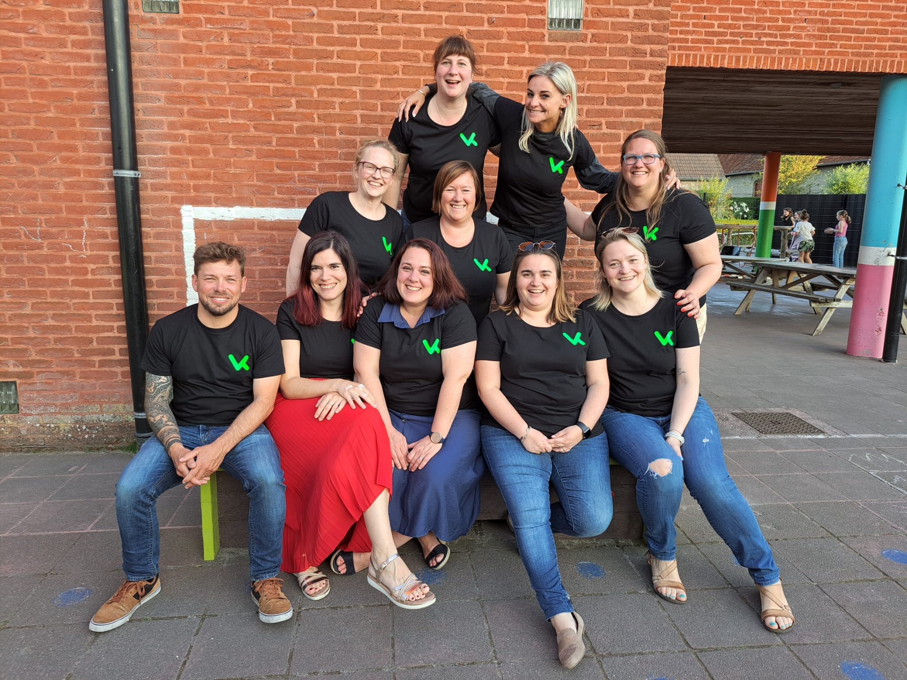
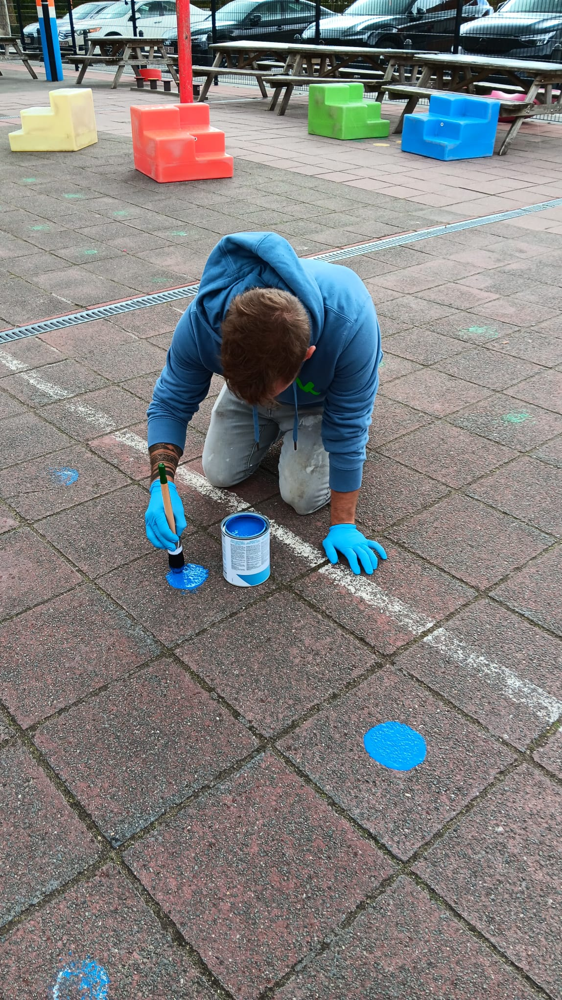
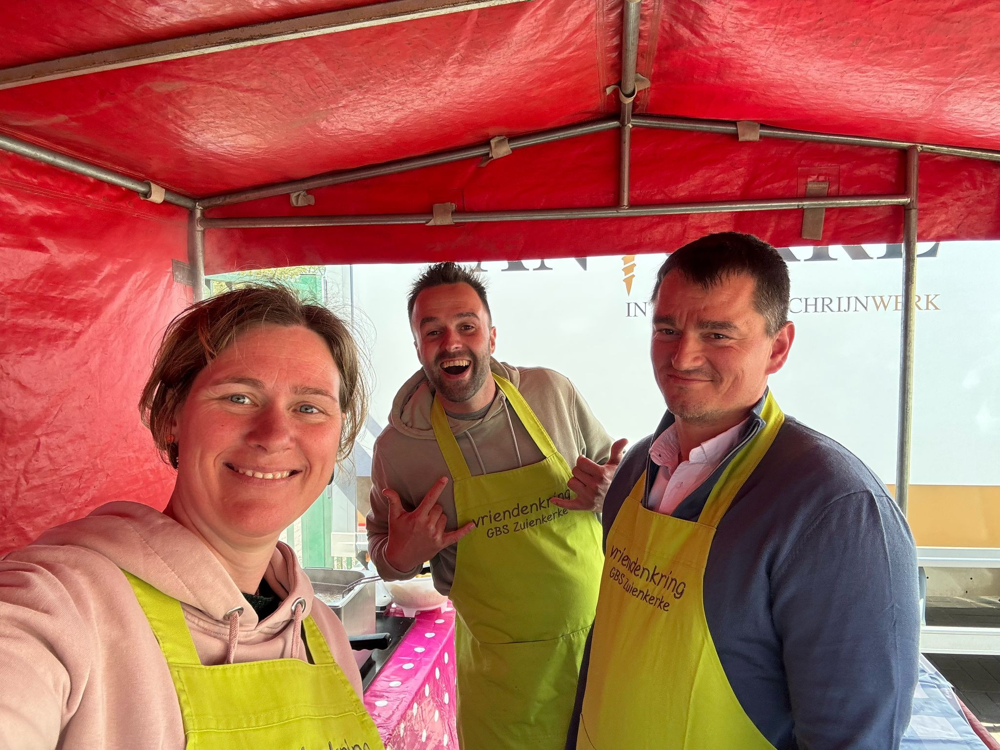
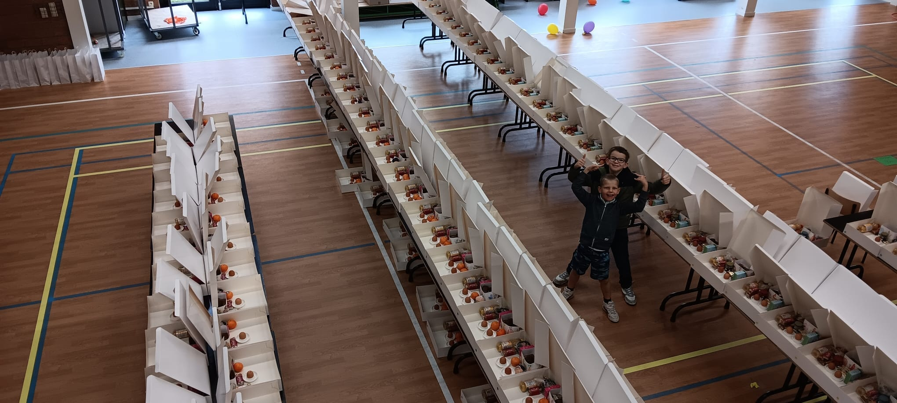
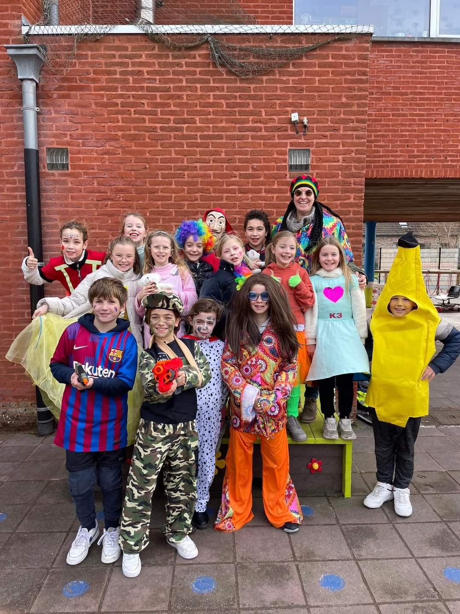

Het oudercomité van GBS 't Polderhart

De vriendenkring is het oudercomité van GBS 't Polderhart. We zijn een groep enthousiaste ouders die zich vrijwillig inzetten om onze school nóg leuker en warmer te maken. Door het jaar heen organiseren we verschillende activiteiten en acties die niet alleen gezellig zijn, maar ook geld opbrengen voor extra's waar alle kinderen van genieten.
Van speeltoestellen tot uitstapjes, van gezellige feestjes tot schoolmaterialen – de vriendenkring zorgt voor die extra dingen die het schoolleven van onze kinderen verrijken.
Elke helpende hand is welkom. Of je nu af en toe komt helpen bij een activiteit of regelmatig meedenkt – samen maken we onze school nóg mooier voor de kinderen.
Gezellige bijeenkomsten waar we ideeën delen en nieuwe activiteiten plannen
Van pannenkoeken bakken tot standbediening – jouw hulp maakt het verschil
Heb je leuke ideeën of handige contacten? We horen graag van je!
Door de inzet van het oudercomité konden we al mooie projecten realiseren
Van sinterklaasfeesten tot eindejaarsactiviteiten, barbecues en schoolfeesten – we zorgen voor gezellige momenten waar ouders, kinderen en het schoolteam samenkomen.

Met acties zoals de chocoladeverkoop, pannenkoekenfestijn, kerstmarkt en andere initiatieven zamelen we geld in. Alle opbrengsten gaan rechtstreeks naar de school voor materiaal, speelgoed en extra uitstappen.

Dankzij de vriendenkring kreeg de speelplaats nieuwe toestellen, kleurrijke markering en speelmaterialen. Zo kunnen kinderen volop ravotten en bewegen tijdens de pauzes.

Van gezellige zitbokken voor de leeshoek tot nieuwe leermaterialen – we investeren in dingen die het leren en leven op school aangenamer maken voor alle kinderen.
